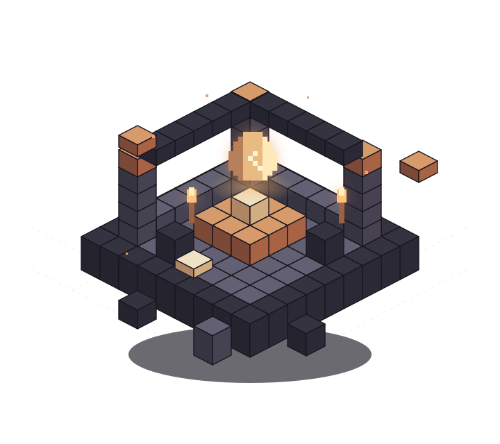

Find your world
Discover modpacks and choose the exact release you want. Download from authorized original sources, with authors’ choices respected.
PLANNED · MODPACK DISCOVERYYour next Minecraft server deserves a better start. We’re bringing modpacks, loaders and Java together in one self-hosted toolkit for Pterodactyl.
Early planning / API approval pending

01 / THE IDEA
A focused replacement for abandoned panel addons. Not another marketplace. Not another subscription. Just the pieces your server needs.
Discover modpacks and choose the exact release you want. Download from authorized original sources, with authors’ choices respected.
PLANNED · MODPACK DISCOVERYMinecraft, mod loader and Java should work together. The goal: compatible versions, without the trial-and-error guessing game.
PLANNED · RUNTIME MATCHINGValidate before changing files. Test failures before shipping. Worlds and player progress belong at the center of the design.
DESIGN GOAL · SAFER INSTALLSSMALL TOOLKIT. CLEAR PURPOSE.
The old addons stopped working when their external service disappeared. BlockHatchery starts with a different idea: own the integration, connect to original providers, and keep the project out in the open.
Read the design notesNo public file mirror. No bundled API keys.
Provider authorization comes first.
02 / THE JOURNEY
We’re early. Here’s exactly where things stand—without a pretend download button.
Document the design. Confirm API permissions, download access and provider requirements.
Create the focused backend and panel integration. No billing platform. No unnecessary extras.
Real installs, compatible runtimes and failure testing on disposable servers—not your existing worlds.
A FEW THINGS TO KNOW
Not yet. This is the project website, not a software release. The Minecraft application is in planning and API-access validation. There are no installable builds or proven integrations yet.
That’s the plan: no sales, subscriptions or advertising. A source-code license will be selected before the application implementation is published. Provider API permissions are separate from our software license.
The first integration targets Pterodactyl v1. CurseForge support depends on approval and authorized file access. Mojang, Modrinth, Fabric, Forge/NeoForge and Paper are intended sources, not a list of working integrations. Pterodactyl v2 is a separate future consideration.
Preserving them is a core requirement, not a claim of completed testing. Install and failure behavior will be tested in isolation before release. Changing modpacks is not automatically safe for an existing world.
FOLLOW THE FIRST BLOCKS
Watch the project take shape. Read the plans.
Bring your ideas to the workbench.